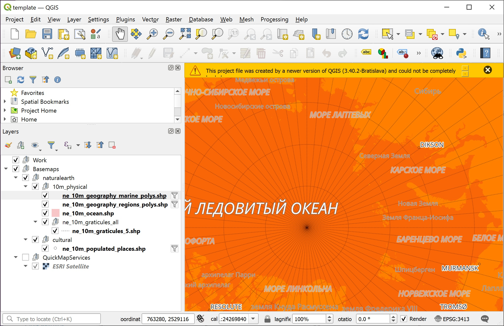
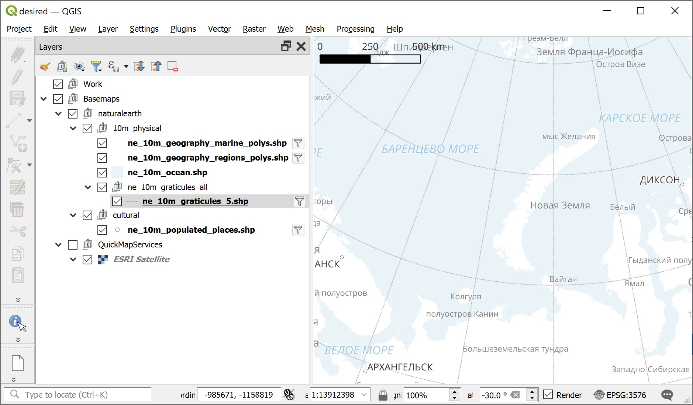
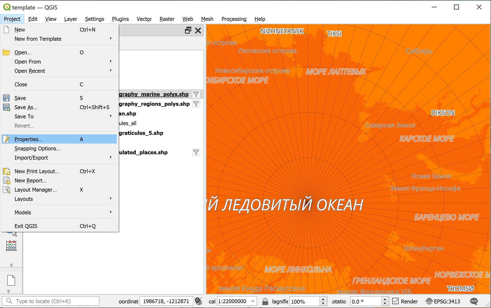
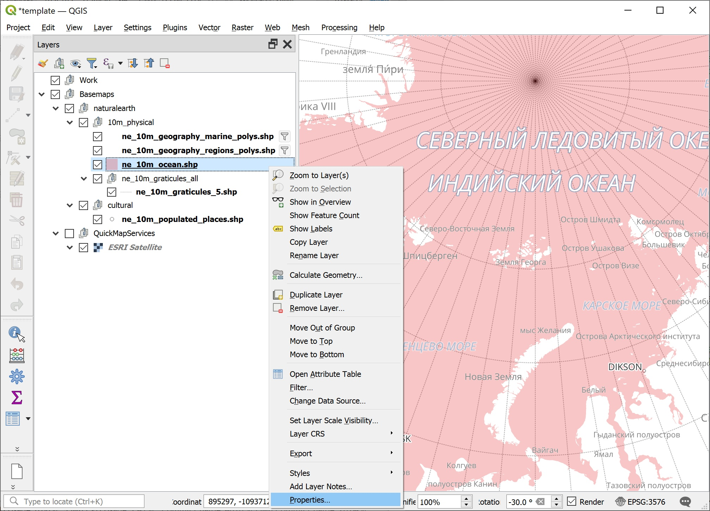
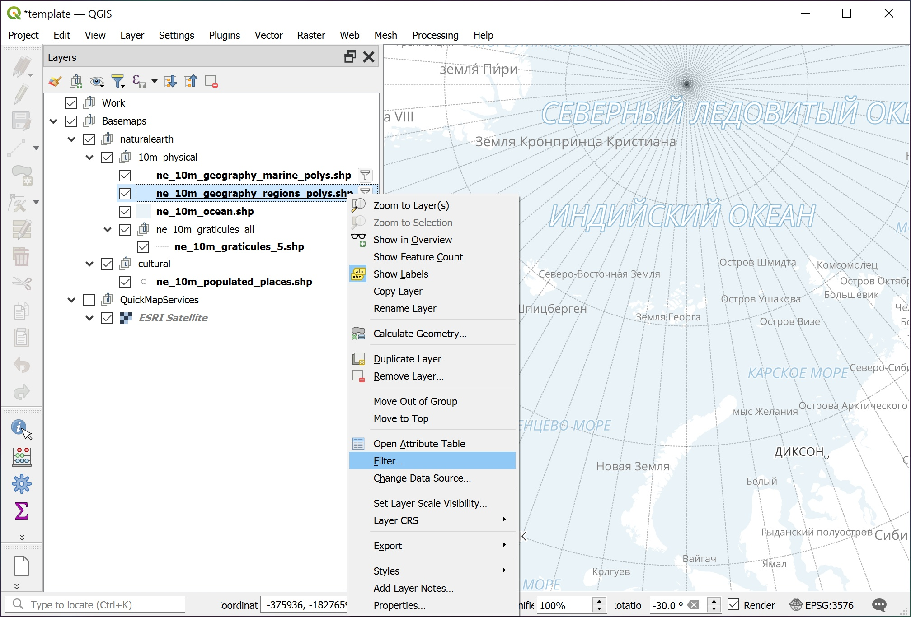
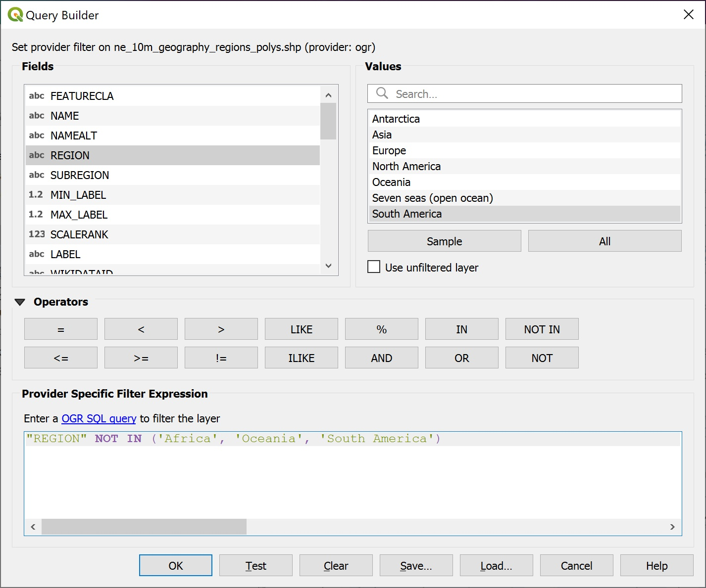
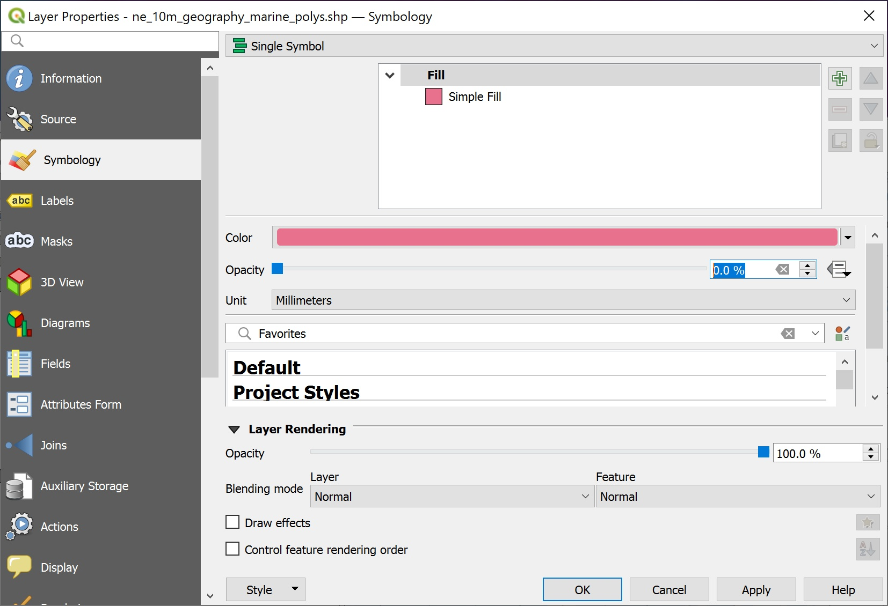
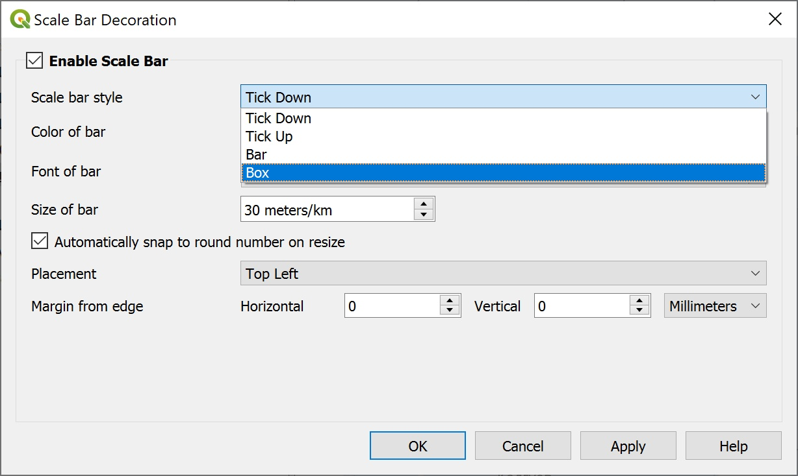
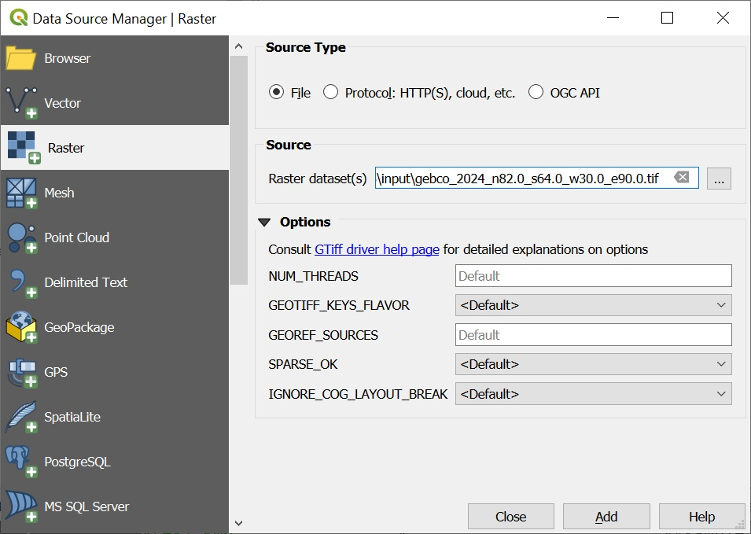

К 06 февраля
Данные
Для освоения
Экспедиция Арктического плавучего университета рейса 2023-2 (Платонов, 2025).
Перейти по DOI (Zenodo) и распаковать.
Папка input должна быть в рабочей директории.
Об этих данных
Natural Earth
Для создания картографической подложки.
-
-
- Download all vector themes as SHP - прямая ссылка на скачивание.
-
В наборе (Платонов, 2025) используется векторные данные, приведенные ниже. Их скачивать не обязательно.
10m_physical/ne_10m_graticules_all/ne_10m_graticules_5.shp - линии долгот-широт через 5 градусов, для помощи в ориентации на север
10m_physical/ne_10m_ocean.shp - полигоны с морями и океанами, разделить сушу и море
10m_physical/ne_10m_geography_regions_polys.shp - полигоны для подписей сухопутных названий
10m_physical/ne_10m_geography_marine_polys.shp - полигоны для подписей морей
10m_cultural/ne_10m_populated_places.shp - точки населенных пунктов
OSM береговая линия
Эти данные для более дательного отображения береговой линии по сравнению с Natural Earth.
GEBCO батиметрия
-
-
Download data for user-defined areas
- Application. Откройте в новой вкладке по размеру экрана браузера. Полученные с этого источника данные включены в набор (Платонов, 2025) с уменьшенным масштабом.
-
Программы
QGIS
Ядро
Сайт https://qgis.org/. Находим “Download”
https://qgis.org/en/site/forusers/download.html
Прямые ссылки для скачивания установочного файла QGIS 3.34 LTR и QGIS 3.40 Latest под Windows (актуальны на 26 января 2025 г.) Если не получается открыть, можно забрать отсюда: QGIS 3.34 LTR или QGIS 3.40 Latest до 15 февраля 2025 г.
Расширения


R
https://www.r-project.org/. Выбираем “download R” и сервер для скачивания (mirror).
Попробовать
QGIS
Открыть проект

Указать путь к проекту template.qgz из набора (Платонов, 2025).

Возможное оранжевое предупреждение проигнорировать и закрыть.
Выполнить задание
Отредактировать отображение с красного на голубой

Изменить проекцию проекта на азимутальную равноплощадную Ламберта (EPSG:3576)
Скорректировать вращением направление на север
Моря сделать голубыми, сушу не раскрашивать
Названия населенных пунктов сделать русскоязычными
Убрать встречающиеся названия морей и регионов из южного полушария
Добавить масштабную линейку
По шагам
Свойства проекта

Заменить цвет фона на белый, чтобы убрать красноту отображения.

Изменить проекцию проекта на равноплощадную азимутальную проекцию Ламберта (EPSG:3576)

В строке состояния указать, на сколько градусов повернуть, чтобы меридиан в центре отображения был направлен вертикально

Cвойства слоя

Раскраска слоя
Изменить красный цвет океана на голубой. Можно изменить значение прозрачности слоя.

Таблица атрибутов

Это обычная таблица, как в Excel, каждая строка связана с геометрией пространственного объекта.

Извление названий
Изменить англоязычные названия населённых пунктов на русскоязычные.

Лишние названия
Убрать появляющиеся подписи из южного полушария фильтрацией исключением.

Для морей в таблице атрибутов нет столбца по региону, поэтому фильтрация напрямую.

Для суши можно сделать фильтрацию по региону, который есть в таблице атрибутов.

Чтобы отображались лишь названия, без точек-линий-полигонов, слой полностью прозрачный

Украшательства
Применены разные стили отображения для океанов и морей.


Прореживание долгот

Масштабная линейка


Результат
Сохраните с новым названием. Если совсем ничего не получилось, используйтся файл проекта desired.qgz из набора (Платонов, 2025).
Cвои данные
Открыть вектор


Открыть растр




R
Установить необходимые пакеты
Ниже приведен скрипт, который проверяет, установлены ли требуемые пакеты и при необходимости их устанавливает.
pkgList <- c("png","mapview","tmap","sf","terra","adehabitatLT","readxl"
,"tidyr","lwgeom","geosphere","ggstatsplot","ursa")
repos <- "https://cloud.r-project.org/"
type <- if (.Platform$OS.type=="windows") "binary" else getOption("pkgType")available <- sapply(pkgList,function(pkg) {
if (requireNamespace(pkg))
return(TRUE)
install.packages(pkg,repos=repos,type=type)
requireNamespace(pkg)
})package 'png' successfully unpacked and MD5 sums checkedpackage 'fs' successfully unpacked and MD5 sums checked
package 'rappdirs' successfully unpacked and MD5 sums checked
package 'cachem' successfully unpacked and MD5 sums checked
package 'memoise' successfully unpacked and MD5 sums checked
package 'sass' successfully unpacked and MD5 sums checked
package 'proxy' successfully unpacked and MD5 sums checked
package 'evaluate' successfully unpacked and MD5 sums checked
package 'highr' successfully unpacked and MD5 sums checked
package 'bslib' successfully unpacked and MD5 sums checked
package 'fontawesome' successfully unpacked and MD5 sums checked
package 'tinytex' successfully unpacked and MD5 sums checked
package 'geometries' successfully unpacked and MD5 sums checked
package 'jsonify' successfully unpacked and MD5 sums checked
package 'rapidjsonr' successfully unpacked and MD5 sums checked
package 'sfheaders' successfully unpacked and MD5 sums checked
package 'lazyeval' successfully unpacked and MD5 sums checked
package 'systemfonts' successfully unpacked and MD5 sums checked
package 'cpp11' successfully unpacked and MD5 sums checked
package 'colorspace' successfully unpacked and MD5 sums checked
package 'later' successfully unpacked and MD5 sums checked
package 'promises' successfully unpacked and MD5 sums checked
package 'e1071' successfully unpacked and MD5 sums checked
package 'wk' successfully unpacked and MD5 sums checked
package 'digest' successfully unpacked and MD5 sums checked
package 'fastmap' successfully unpacked and MD5 sums checked
package 'rlang' successfully unpacked and MD5 sums checked
package 'jsonlite' successfully unpacked and MD5 sums checked
package 'knitr' successfully unpacked and MD5 sums checked
package 'rmarkdown' successfully unpacked and MD5 sums checked
package 'yaml' successfully unpacked and MD5 sums checked
package 'geojsonsf' successfully unpacked and MD5 sums checked
package 'crosstalk' successfully unpacked and MD5 sums checked
package 'jquerylib' successfully unpacked and MD5 sums checked
package 'leaflet.providers' successfully unpacked and MD5 sums checked
package 'magrittr' successfully unpacked and MD5 sums checked
package 'RColorBrewer' successfully unpacked and MD5 sums checked
package 'viridisLite' successfully unpacked and MD5 sums checked
package 'xfun' successfully unpacked and MD5 sums checked
package 'brew' successfully unpacked and MD5 sums checked
package 'svglite' successfully unpacked and MD5 sums checked
package 'uuid' successfully unpacked and MD5 sums checked
package 'Rcpp' successfully unpacked and MD5 sums checked
package 'terra' successfully unpacked and MD5 sums checked
package 'plyr' successfully unpacked and MD5 sums checked
package 'cli' successfully unpacked and MD5 sums checked
package 'farver' successfully unpacked and MD5 sums checked
package 'glue' successfully unpacked and MD5 sums checked
package 'labeling' successfully unpacked and MD5 sums checked
package 'lifecycle' successfully unpacked and MD5 sums checked
package 'munsell' successfully unpacked and MD5 sums checked
package 'R6' successfully unpacked and MD5 sums checked
package 'mime' successfully unpacked and MD5 sums checked
package 'httpuv' successfully unpacked and MD5 sums checked
package 'classInt' successfully unpacked and MD5 sums checked
package 'DBI' successfully unpacked and MD5 sums checked
package 's2' successfully unpacked and MD5 sums checked
package 'units' successfully unpacked and MD5 sums checked
package 'base64enc' successfully unpacked and MD5 sums checked
package 'htmltools' successfully unpacked and MD5 sums checked
package 'htmlwidgets' successfully unpacked and MD5 sums checked
package 'leafem' successfully unpacked and MD5 sums checked
package 'leaflet' successfully unpacked and MD5 sums checked
package 'leafpop' successfully unpacked and MD5 sums checked
package 'raster' successfully unpacked and MD5 sums checked
package 'satellite' successfully unpacked and MD5 sums checked
package 'scales' successfully unpacked and MD5 sums checked
package 'servr' successfully unpacked and MD5 sums checked
package 'sf' successfully unpacked and MD5 sums checked
package 'sp' successfully unpacked and MD5 sums checked
package 'mapview' successfully unpacked and MD5 sums checkedpackage 'logger' successfully unpacked and MD5 sums checked
package 'abind' successfully unpacked and MD5 sums checked
package 'stringdist' successfully unpacked and MD5 sums checked
package 'spacesXYZ' successfully unpacked and MD5 sums checked
package 'lwgeom' successfully unpacked and MD5 sums checked
package 'dichromat' successfully unpacked and MD5 sums checked
package 'XML' successfully unpacked and MD5 sums checked
package 'cols4all' successfully unpacked and MD5 sums checked
package 'data.table' successfully unpacked and MD5 sums checked
package 'leafgl' successfully unpacked and MD5 sums checked
package 'leaflegend' successfully unpacked and MD5 sums checked
package 'leafsync' successfully unpacked and MD5 sums checked
package 'stars' successfully unpacked and MD5 sums checked
package 'tmaptools' successfully unpacked and MD5 sums checked
package 'tmap' successfully unpacked and MD5 sums checkedpackage 'pixmap' successfully unpacked and MD5 sums checked
package 'RcppArmadillo' successfully unpacked and MD5 sums checked
package 'ade4' successfully unpacked and MD5 sums checked
package 'adehabitatMA' successfully unpacked and MD5 sums checked
package 'CircStats' successfully unpacked and MD5 sums checked
package 'adehabitatLT' successfully unpacked and MD5 sums checkedpackage 'utf8' successfully unpacked and MD5 sums checked
package 'rematch' successfully unpacked and MD5 sums checked
package 'fansi' successfully unpacked and MD5 sums checked
package 'pillar' successfully unpacked and MD5 sums checked
package 'pkgconfig' successfully unpacked and MD5 sums checked
package 'vctrs' successfully unpacked and MD5 sums checked
package 'crayon' successfully unpacked and MD5 sums checked
package 'hms' successfully unpacked and MD5 sums checked
package 'prettyunits' successfully unpacked and MD5 sums checked
package 'cellranger' successfully unpacked and MD5 sums checked
package 'tibble' successfully unpacked and MD5 sums checked
package 'progress' successfully unpacked and MD5 sums checked
package 'readxl' successfully unpacked and MD5 sums checkedpackage 'generics' successfully unpacked and MD5 sums checked
package 'stringi' successfully unpacked and MD5 sums checked
package 'withr' successfully unpacked and MD5 sums checked
package 'dplyr' successfully unpacked and MD5 sums checked
package 'purrr' successfully unpacked and MD5 sums checked
package 'stringr' successfully unpacked and MD5 sums checked
package 'tidyselect' successfully unpacked and MD5 sums checked
package 'tidyr' successfully unpacked and MD5 sums checkedpackage 'geosphere' successfully unpacked and MD5 sums checkedpackage 'rbibutils' successfully unpacked and MD5 sums checked
package 'Rdpack' successfully unpacked and MD5 sums checked
package 'backports' successfully unpacked and MD5 sums checked
package 'cowplot' successfully unpacked and MD5 sums checked
package 'Deriv' successfully unpacked and MD5 sums checked
package 'modelr' successfully unpacked and MD5 sums checked
package 'microbenchmark' successfully unpacked and MD5 sums checked
package 'SparseM' successfully unpacked and MD5 sums checked
package 'minqa' successfully unpacked and MD5 sums checked
package 'nloptr' successfully unpacked and MD5 sums checked
package 'reformulas' successfully unpacked and MD5 sums checked
package 'broom' successfully unpacked and MD5 sums checked
package 'numDeriv' successfully unpacked and MD5 sums checked
package 'doBy' successfully unpacked and MD5 sums checked
package 'carData' successfully unpacked and MD5 sums checked
package 'Formula' successfully unpacked and MD5 sums checked
package 'quantreg' successfully unpacked and MD5 sums checked
package 'elliptic' successfully unpacked and MD5 sums checked
package 'contfrac' successfully unpacked and MD5 sums checked
package 'deSolve' successfully unpacked and MD5 sums checked
package 'lme4' successfully unpacked and MD5 sums checked
package 'pbkrtest' successfully unpacked and MD5 sums checked
package 'lmerTest' successfully unpacked and MD5 sums checked
package 'car' successfully unpacked and MD5 sums checked
package 'coda' successfully unpacked and MD5 sums checked
package 'pbapply' successfully unpacked and MD5 sums checked
package 'mvtnorm' successfully unpacked and MD5 sums checked
package 'MatrixModels' successfully unpacked and MD5 sums checked
package 'hypergeo' successfully unpacked and MD5 sums checked
package 'RcppEigen' successfully unpacked and MD5 sums checked
package 'multcompView' successfully unpacked and MD5 sums checked
package 'gmp' successfully unpacked and MD5 sums checked
package 'Rmpfr' successfully unpacked and MD5 sums checked
package 'SuppDists' successfully unpacked and MD5 sums checked
package 'kSamples' successfully unpacked and MD5 sums checked
package 'BWStest' successfully unpacked and MD5 sums checked
package 'desc' successfully unpacked and MD5 sums checked
package 'RcppParallel' successfully unpacked and MD5 sums checked
package 'reshape' successfully unpacked and MD5 sums checked
package 'bayestestR' successfully unpacked and MD5 sums checked
package 'reshape2' successfully unpacked and MD5 sums checked
package 'gtable' successfully unpacked and MD5 sums checked
package 'isoband' successfully unpacked and MD5 sums checked
package 'prismatic' successfully unpacked and MD5 sums checked
package 'rematch2' successfully unpacked and MD5 sums checked
package 'rstudioapi' successfully unpacked and MD5 sums checked
package 'afex' successfully unpacked and MD5 sums checked
package 'BayesFactor' successfully unpacked and MD5 sums checked
package 'effectsize' successfully unpacked and MD5 sums checked
package 'PMCMRplus' successfully unpacked and MD5 sums checked
package 'rstantools' successfully unpacked and MD5 sums checked
package 'WRS2' successfully unpacked and MD5 sums checked
package 'zeallot' successfully unpacked and MD5 sums checked
package 'correlation' successfully unpacked and MD5 sums checked
package 'datawizard' successfully unpacked and MD5 sums checked
package 'ggcorrplot' successfully unpacked and MD5 sums checked
package 'ggplot2' successfully unpacked and MD5 sums checked
package 'ggrepel' successfully unpacked and MD5 sums checked
package 'ggside' successfully unpacked and MD5 sums checked
package 'ggsignif' successfully unpacked and MD5 sums checked
package 'insight' successfully unpacked and MD5 sums checked
package 'paletteer' successfully unpacked and MD5 sums checked
package 'parameters' successfully unpacked and MD5 sums checked
package 'patchwork' successfully unpacked and MD5 sums checked
package 'performance' successfully unpacked and MD5 sums checked
package 'statsExpressions' successfully unpacked and MD5 sums checked
package 'ggstatsplot' successfully unpacked and MD5 sums checkedpackage 'ursa' successfully unpacked and MD5 sums checked[1] '3.11.2' png mapview tmap sf terra adehabitatLT readxl tidyr
TRUE TRUE TRUE TRUE TRUE TRUE TRUE TRUE
lwgeom geosphere ggstatsplot ursa
TRUE TRUE TRUE TRUE Everything is ok?
TRUE